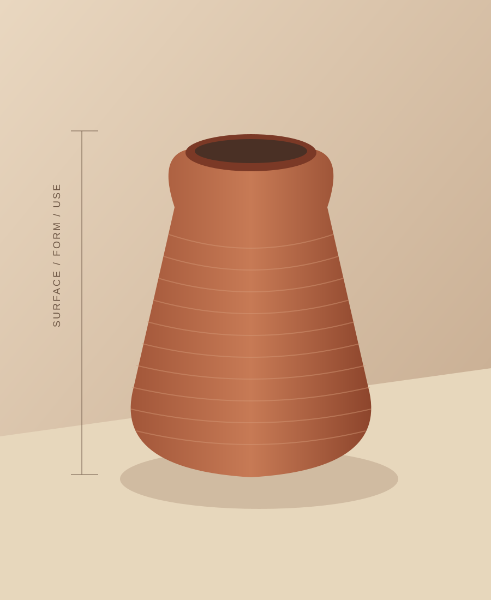
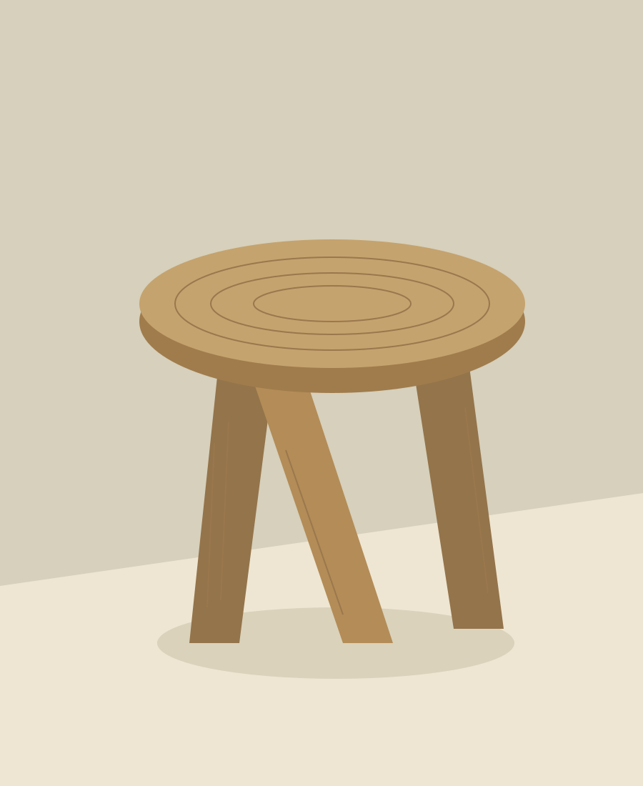

Object / 01
The turned vessel.
A sample product detail with space for the facts a considered purchase needs. This demonstration does not offer an actual item for sale.

Original artwork. Replace with your own product photography before taking orders.
Clay / surface study
Quiet form. Visible process.
The rhythm of the turning remains visible on the outside. Use this section to describe actual making and finish details without overstating durability or provenance.
- Material
- Sample terracotta study
- Dimensions
- Add verified height × width
- Finish
- Specify actual glaze and seal
- Availability
- Inquiry only; no live inventory
- Price
- Set by the maker
No cart or payment service is connected. A commerce link can be added after its checkout is tested.
Care & use
Replace this with care guidance appropriate to the finished object. Do not claim food, dishwasher, microwave, or outdoor safety without substantiation.
Delivery & returns
Publish actual dispatch timing, packaging, damage reporting, return terms, and applicable consumer rights before selling.
Also in timber.
A low stool study explores grain, edge, and structure. Give every real object its own accurate specification and usage notes.
Return to the collection